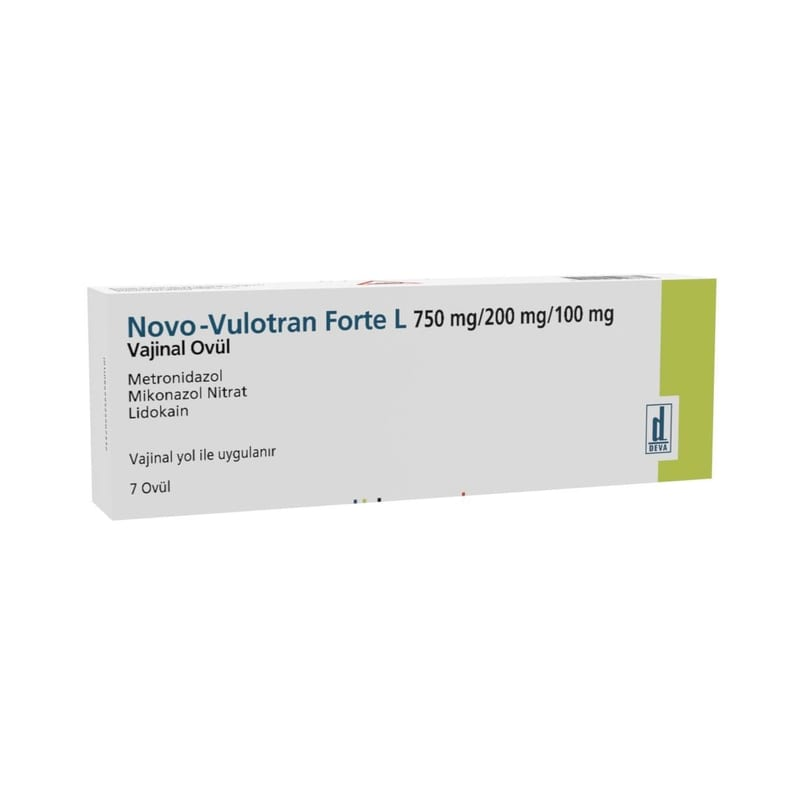

Novo-Vulotran Forte L 750 mg/200 mg/100 mg Vajinal Ovül ,7 Ovül

Ne için kullanılır
KT · Bölüm 1 NOVO-VULOTRAN FORTE L, vajina içine (hazneye) yerleştirilmek suretiyle uygulanan ovül formunda bir üründür. Antibakteriyel (bakterilere karşı etkili) ve antifungaller (mantar hastalıklarına karşı etkili) olarak adlandırılan bir ilaç grubuna dahildir. Beyazımsı-sarı renkte, homojen görünüşlü, elipsoid şekilde ovül etkin madde olarak 750 mg metronidazol, 200 mg mikonazol nitrat, 100 mg lidokain içermektedir. NOVO- VULOTRAN FORTE L, 7 adet ovül ve ilacın vajina içine (hazneye) yerleştirilmesi esnasında kullanılan 7 adet parmaklık içeren ambalajda kullanıma sunulmaktadır. NOVO-VULOTRAN FORTE L, vajinada (haznede) kaşıntı, yanma, anormal akıntı, şişme ve kızarma gibi belirtilerle seyreden vajina iltihabının (vajinit) tedavisinde kullanılır.